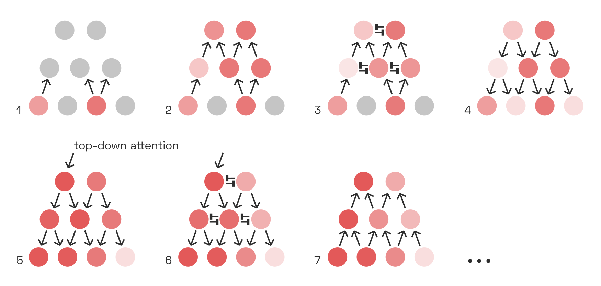
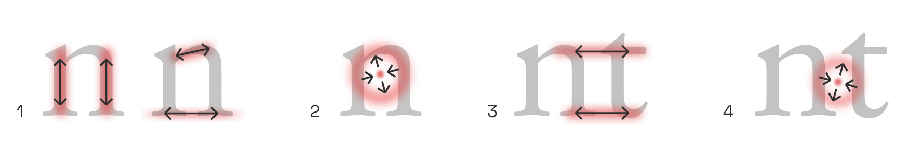
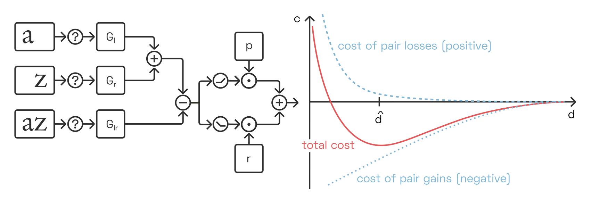
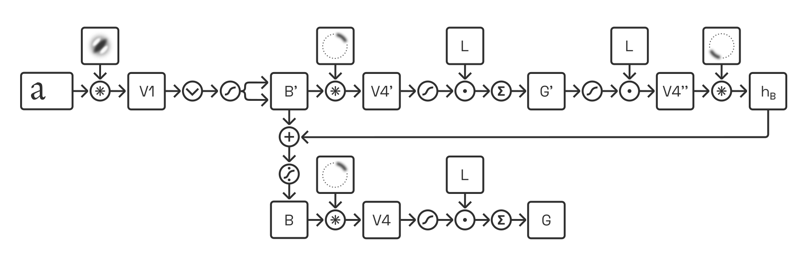
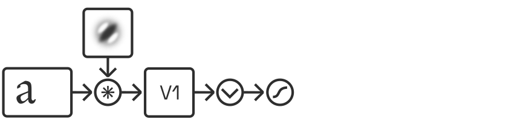
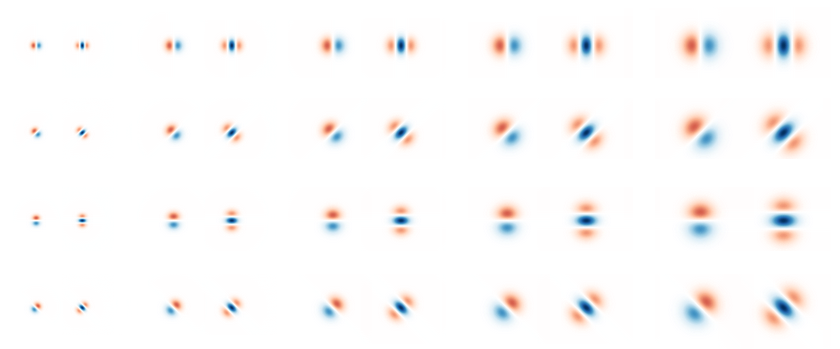
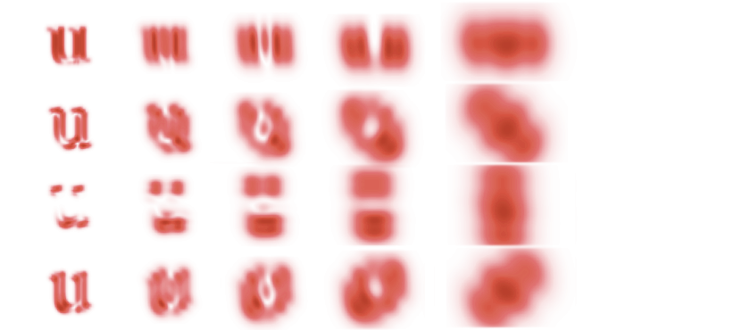

YinYangFit
Acknowledgements
This research would not have been possible without funding from Google, for which I have Dave Crossland to thank in particular. I am grateful also to Simon Cozens and others for many valuable discussions.
Abstract
Adjusting letter distances to be visually pleasing is a challenging and time-consuming task. As existing tools are too primitive to reliably handle the infinite variety of typefaces, designers still need to rely on their intuitive judgment. I review how letterfitting fits into the current scientific understanding of how letters and words are perceived in the brain, and present approximate models that can be fitted to to existing, hand-fitted fonts using backpropagation.
Target audience
Designers and developers with an interest in neuroaesthetics.
Epistemic status: provisional
This article is based on a survey of hundreds of peer-reviewed articles, and in line with mainstream ideas in vision and neuroscience research. It is the product of many months of work and countless revisions. That said, even the in-vivo evidence for the suggested models is often indirect or circumstantial. Nothing in this article should be construed as final. I welcome corrections!
Text samples
Render text samples
Motivation
Letterfitting refers to the process of adjusting the distances between pairs of lettersI use the word “letter” very liberally; the more general term is glyphW. during typeface design. 
Red vertical bars show side bearings, blue vertical bar shows a negative kern. It’s often referred to as “spacing and kerning”, because pair distances are the sum of fixed amounts of space around every letter (so-called side bearings) and additional adjustment values for individual pairs (so-called kerns).Many existing heuristics try to either auto-space or auto-kern, which is doomed to fail. See the appendix for the correct mathematical approach to split pair distances into side bearings and kerns. Quality fonts often contain thousands of hand-kerned pairs that undergo weeks of testing and refinement, all by hand—because surprisingly, there still are no automated solutions that reliably do the job.And not for lack of trying: many approaches exist, the most popular of which are listed in the appendix below.
The heart of the problem: typographers can’t even agree what letterfitting does.As Bertrand Russell put it, “everything is vague to a degree you do not realize till you have tried to make it precise.” Some say that it’s about achieving a certain balance between letter pairs, the judgment of which is to spring from the designer’s personal aesthetic intuition.It goes without saying that as for the design decisions of professional typographers, non disputandum est. This is the premise behind the venerable kern game. Others say that the goal is to produce an “even colour”, i.e. a printed page with a uniform texture and without noticeable blobs of black or white. Yet others have insinuatedFirst and foremost Frank Blokland, who in his PhD thesis investigated how practical considerations in the Renaissance printing trade may have led to a standardization of font metrics. that the distances between letter stems are really quite arbitrary, and that we are simply conditioned by existing fonts to (prefer to) read letters at particular pair distances.
All three of the above descriptions seem to point to the same story: that skilled designers achieve a pleasing visual balance between letter pairs because they have honed their perception through the careful study of existing fonts. Coincidentally, perfectly balanced letter pairs also happen to result in perfect legibility and a perfectly even typographic colour. Does that story hold water?
As it turns out, research suggests that colour, balance, and legibility have different neural correlates.

Evenness of colour is a question of texture perception; quality of balance is a question of competitive inhibition between perceptual gestalt groups; and legibility is a question of the reliable detection of letters and n-grams from pre-processed visual features. Although the three are often in rough agreement, optimizing for one does not guarantee a perfect outcome for the others.
The premise behind the letterfitting tools that exist today is that the gaps between letters can be measured and equalized. But human brains don’t perceive gaps; they perceive shapes whose neural representations interact across space in particular ways. If we want to develop robust, universal automatic letterfitting algorithms—algorithms that work on both hairline slab serifs and broad-nib italics, on both captions and headline sizes, on both Latin and Hangul—then we need to build better intuitions for the neural dynamics of our vision system. That’s what this article is about.
In a way, it is surprising that type design and cognitive psychology are so divorced from one another.The studies that do exist are almost exclusively empirical (see e.g. the
Key Concepts
Before we dive into the details, let’s put the three letterfitting objectives fit into a broader cognitive science context.
Typographic colour
Typographic colour refers to the visual texture created by the ink on the page. Most obviously, a darker colour is the result of bolder, narrower, more tightly-fit type. But the line spacing contributes to a document’s characteristic texture as well, and so does the angle of the letters (i.e. upright vs. italic) and, ultimately, even the design of the individual letters.
Some design teachers like to give colour-based letterfitting prescriptions, like “match the black and the white” or “equalize the negative space in the counters with the negative space in the gaps.”Like horoscopes, these rules only work when they are formulated vaguely enough to be useless. As we will see later, these heuristics are actually primitive descriptions of the kind of spatial frequency correlations that form the basis of neural texture perception.
Balance
The brain has a general tendency to group visual features into perceptually coherent objects. Meanwhile, the typographer’s job is to group letters into perceptually coherent words. When the letters are fitted poorly, the perceptual grouping into words will fail: this we call poor balance.
Here, the saturation of the coloured blobs indicates the intensity of grouping at different scales. Small perceptual groups tend to outcompete larger ones, so unless the grouping is balanced, the word will be fragmented. The poorly fitted word in the last column triggers the perception of two separate objects, namely the single letter c and a pair at. 
Perceptual grouping networks are a very fundamental piece of our vision circuitry, and not exclusive to reading. Their behaviour is often described by so-called Gestalt laws,“Gestalt”, with a hard G, is German for “shape” or “form”. The Gestalt lawsW are also known as the principle of PrägnanzW. which posit that whenever visual signals appear in tightly clustered, connected, or convex arrangements, we tend to perceive them as unitary objects:

In order to quantify the strength of perceptual grouping between letter pairs, we need to understand why and how our visual system binds image fragments together.
Psychologists have known about these rules for a over a century.The pioneers of Gestalt psychology in the first half of the 20th century knew almost nothing about the brain’s vision system, so they naturally fell back on metaphors drawn from electromagnetics and fluid mechanics. Today, brain scientists have moved on, but typographers and visual artists still talk about lights, shadows, bubbles, and force fields.
I recommend Johan Wagemans et al.’s fantastic two-part historical review of Gestalt psychology, published in 2012 (
Legibility
Vision and reading are not the same thing; neither an even texture nor perfectly balanced pair grouping guarantees good legibility. So where do letter and word detection enter the story?
As we will see, reading is actually a collection of different modes of perception, each of which corresponds to a different stage of reading acquisition in childhood and to a different brain region. A type designer manipulating letter shapes is performing an entirely different mental task than someone reading text set in their font. In fact, it appears that most designers are not directly optimizing for legibility at all. This topic requires a discussion of the various letter- and word-classifying neural networks in our brain, of their strengths and weaknesses, and of the importance of word-dividing spaces in fusional languages like English.
Prior art
Most existing approaches operate either on the distance between stems, or on the area of the gap between them. Some are hybrids, more complex, or unpublished; finally, there has been some experimental work using neural nets:

Fixed-distance methods: A family of approaches that insert pre-defined distances between letter pairs. In their simplest incarnation, these heuristics are equivalent to simply adding sidebearings to every letter, without any kerns. Kernagic, inspired by Frank Blokland’s research, uses heuristics to identify stems or stem-equivalents (such as the round sides of an o) in every letter shape, and then aligns them. This works reasonably well with very regular type (think blackletter), but manual adjustments are usually required. Less well known is Barry Schwartz’ anchor point implementation of what amounts to basically the same idea. Adrian Frutiger, Walter Tracy and Miguel Sousa have devised similar systems, described in Fernando Mello’s MATD thesis. The legendary Hz-ProgramW is also included in this category, as its patent application reveals that letter pair distances were simply stored in a hardcoded table.
Gap area quadrature: A family of algorithms that attempt to quantify and equalize the perceived area of the inter-letter gap. The crux, of course, lies in deciding where the gap ends. HT Letterspacer, the crudest one of these tools, considers everything between baseline and x-height (modulo some minor refinements). Simon Cozens’ CounterSpace uses blurs and convex hulls to more effectively exclude regions that arguably don’t belong to the gap (such as the counter of c). My own Electric Bubble model measures Euclidean instead of horizontal distances, but imposes geometric constraints that produce similar results to CounterSpace. CounterSpace currently wins in terms of performance-complexity ratio but it, too, struggles to fit certain letter pairs.
Other shape-based methods: These include more exotic approaches, such as stonecarver David Kindersley’sW “wedge method” from the 1960s, which operated on letter area moments of inertia (and didn’t really work), and iKern, which produces great results but, just like Adobe’s Optical Kerning feature, remains unpublished. Last but not least, the TypeFacet Autokern tool identifies parts of letter outlines that jut out horizontally, and adds kerning to compensate, based on a few parameters.
Neural nets: Yes, we can train convolutional nets to recognize images of well-fitted and poorly-fitted type. Simon Cozens has built several versions of his kerncritic model (formerly AtoKern), and the recent ones perform surprisingly well on many (if not all) pairs. While neural nets are fascinating, they tend to be black boxes: we can only make guesses at how they work, and we cannot tune their behaviour to suit our taste. This problem holds not just for convolutional nets, but for statistical function approximators in general; I do not discuss them further here.
Honorable mention: Bubble Kerning is a proposal that type designers draw a bubble around every letter, such that software can automatically find pair distances by simply abutting the bubbles. While this isn’t technically a letterfitting heuristic at all, it’s still worth mentioning as a neat idea that could perhaps save designers some time. Toshi Omagari has built a Glyphs plugin.
Automatic letterfitting (in 3 minutes)
- First, simulate V1C responses and weight by scale, to emulate contrast sensitivity function / optical sizing.
- Then, apply a series of V4 contour filters and combine them to detect circular pieces.
- Then, combine these to detect distances.
- Then, reward the right distance.
- Then, penalize harmful proximity.
Area V1: lines and edges
Our brain’s visual processing system is divided into multiple regions, each of which represents the incoming visual imagery at a different level of abstraction. Anything we see—landscapes, patterns, text—activates neurons in each one of these brain areas. While neurons in the lower-level areas respond to concrete details in the visual input, neurons in higher-level areas respond to the presence of particular configurations of such details. Lower- and higher-level areas are equally involved in perception, allowing us to simultaneously experience the raw visual qualia and comprehend what we see on a more abstract level.
Whether we are looking at an apple (and recognizing it as such), a tree (and recognizing it as such), or a word (and reading it): the first few hundred million neurons are the same. These early brain areas—collectively, the visual cortex—are concerned purely with visual (pre-)processing, not yet with classification.
All visual input activates several pieces of visual cortex before reaching dedicated object-detection circuitry such as the Visual Word Form Area (VWFA). We will discuss mainly V1, V2, and V4 (the so-called ventral streamW); many other regions exist that are dedicated to visual tasks less relevant to reading, such as keeping track of moving objects. This big-picture view of reading was perhaps most clearly articulated in this 2003 articlePDF by the prolific reading researchers McCandliss, Cohen and Dehaene. As we will discuss later, the VWFA is actually multiple areas. 
Many readers may have had some exposure, however superficial, to the concept of deep convolutional networks. It is tempting to conceptualize the architecture of the visual cortex as such a network: yes, raw visual input enters at the bottom, undergoes convolution through multiple layers, then comes out at the top as a neat classification of a word. But perception, and perceptual grouping in particular, is a dynamic process. It is not a computation with input and output, but a dance of electrical activity that evolves through time.This interactive visualization of a brain is far from realistic but a much more useful visual metaphor than feed-forward deep learning diagrams. Our goal in this section is to gain an appreciation for these recurrent neural feedback loops.
Of course, feed-forward models have their place. Even at relatively coarse resolutions, it takes unworkably large computational resources to simulate the visual cortex’ recurrent dynamics accurately. Note, however, that our objective is not to build and train a traditional convolutional net, but rather to design a human-interpretable, interactively tunable approximation of the perception of letter pairs.
With that in mind, let’s go on a brief tour through our visual system.
Edge and line detection by simple cells
Sensory input from the eye travels up the optic nerve, through the lateral geniculate nucleus (LGN) on the brain’s thalamus, to the visual cortex at the very back of the head.For our computational purposes, we will ignore any image processing performed by the retina and thalamus, such as the luminance adaptation and pooling operations performed by retinal ganglion cellsW.
Illustration adapted from Nicolas Henri Jacob (1781–1871), Traité complet de l’anatomie de l’homme comprenant la médecine opératoire, par le docteur Bourgery. Available in the Anatomia Collection of the Thomas Fisher Rare Book Library, University of Toronto. 
The first phalanx of cells—the primary visual cortex, or V1—performs what amounts to a band-filtered wavelet decomposition. Each neuron here is directly and retinotopicallyThat is, neurons are laid out to roughly mirror the organization of the retinaW, such that adjacent photoreceptors are connected to nearby neurons in the cortex. connected to a small contiguous group of photoreceptors, its receptive field (RF),To be clear, the majority of neurons physically located in V1 don’t actually receive direct input from the eye but rather just serve as local connections to facilitate basic image enhancement, such as contrast normalization, but we will skip here the organization of V1’s layers. and activates whenever a particular subset of the receptors detects light but the others don’t. The on/off subsets are laid out such that each neuron effectively detects a small piece of a line or edge of a particular size and orientation somewhere in the field of vision.This is a relatively well-known concept, because the same kinds of receptive fields tend to emerge in the first layer of image-classifying convolutional networks. For those readers completely unfamiliar with these ideas, I recommend watching this introductory animation, followed by this Allen Institute talk about the visual system, followed by this in-depth MIT lecture on the anatomical details.

These neurons are called simple cells, and we can easily predict their response to a given input, depending on the tuning and location of their receptive fields.David Hubel and Torsten Wiesel first discovered this in the 1950s. They showed patterns of light to a cat after sticking electrodes into its brain (Youtube has a video of said cat). The two researchers went on to win a Nobel Prize for their experiments. In software models, the filtering operation performed by simple cells is typically implemented as Fourier-domain multiplication with a bank of complex band-pass filters, each of which is tuned to a particular orientation and spatial frequency.
Leaving the technical details for later sections, here is how sets of similarly-tuned simple cells would respond to the image of a dark vertical bar:

Complex cells
As it turns out, some V1 neurons are less sensitive to phase than others, and some may even respond equally to both lines and edges, as long as scale and orientation match their tuning. Those cells are called complex cells.Simple and complex cells lie along a spectrum of phase specificity, which is brilliantly explained by this recent paperPDF by Korean researchers Gwangsu Kim, Jaeson Jang and Se-Bum Paik. But it seems that there’s even more to the story, as complex cells seem to change their simpleness indexPDF in response to their input as well. Thanks to their phase invariance, complex cells can extract key structural information at the expense of colour and contrast data. In the following picture, all complex cell responses of a given frequency scale are shown together, regardless of the orientation:

It so happens that contrast and colour are mostly irrelevant to reading; after all, we can read black-on-white just as well as white-on-black. This suggests that it is mainly complex cells that provide the reading-relevant signals to higher-level brain areas.In practice, it is measurably easier to read dark text on light backgrounds. Not only do light backgrounds make the pupil contract,
To be clear, this does not mean that the signals from simple cells are lost or discarded. Just like the signals from colour-detecting cells in the so-called blob regions of V1, which are not discussed here, the signals from simple cells do contribute both to our experience of vision and to the activity of higher-level brain regions. For reading (and thus letterfitting) purposes, however, we will focus on the responses of complex cells.
Lateral inhibition
Neurons in V1, like neurons elsewhere in the brain, use lateral connections to inhibit their neighbours. This is called lateral inhibition. Because the strength of the inhibition depends directly on the strength of the neuron’s own activation, this setup helps the most active neuron to mute its neighbours. This sharpens the response landscape, which is helpful considering that given any visual input, neurons tuned almost, but not quite, to the right orientation and frequency will still fire quite a bit, effectively adding noise to the signal. Lateral inhibition also reduces the influence of the overall brightness of the input image, in favour of more local contrast. Lateral inhibition is a recurrent mechanism, and as such cannot be simulated by a purely feed-forward model.Deep learning practitioners achieve similar results by normalizing their datasets and, more recently, actively factoring out correlations (see e.g. this 2020 paper by Chengxi Ye and colleagues). We will stay within the limits of biological plausibility here, but discuss the classic divisive normalization approximation in a later section.
Contrast sensitivity to spatial frequencies
 Contrast sensitivity function. The vertical gradient in contrast is uniform across the image, but we most easily perceive the mid-frequency gratings even at lower contrasts. Note that the red line, shown here only for illustrative purposes, may not match the contrast sensitivity function you experience at your current viewing distance and screen settings. Another aspect of vision that appears to manifest quite early during visual processing—setting aside the optical limitations of our eye—is our specific sensitivity to spatial frequencies. Humans respond particularly well to angular frequencies of about 2–5 cycles per degree, and unsurprisingly this translates to reading speed as well, especially under low-contrast conditions.See studies like
Contrast sensitivity function. The vertical gradient in contrast is uniform across the image, but we most easily perceive the mid-frequency gratings even at lower contrasts. Note that the red line, shown here only for illustrative purposes, may not match the contrast sensitivity function you experience at your current viewing distance and screen settings. Another aspect of vision that appears to manifest quite early during visual processing—setting aside the optical limitations of our eye—is our specific sensitivity to spatial frequencies. Humans respond particularly well to angular frequencies of about 2–5 cycles per degree, and unsurprisingly this translates to reading speed as well, especially under low-contrast conditions.See studies like
We will return to the question of how V1 outputs vary in response to changing pair distances in a later section. For now, let’s move on to how these signals are processed in subsequent areas.
Area V2: contours and textures
Area V1 deconstructs the incoming imagery into thousands of edge and line fragments. Area V2 helps find patterns in those signals, patterns that form the basis for the perceptual grouping effect we are interested in.
Each neuron in V2 takes its input from a combinations of neurons in V1,Again, we will skip here a discussion of the various layers and interneurons of V2. creating receptive fields that can be twice as large as those in V1. Any particular V2 neuron could take inputs from any variety of V1 neurons that are retinotopically nearby. And indeed, V2 comprises a vast diversity of cells representing correlations between all kinds of different V1 signals: correlations between V1 simple cells and complex cells, between V1 cells of different scales and orientations, and between V1 cells at different spatial locations.  V2 cells take their input from a nearby V1 cells, correlating receptive fields across dimensions of space, simpleness/complexity, orientation, and spatial frequency scale.
V2 cells take their input from a nearby V1 cells, correlating receptive fields across dimensions of space, simpleness/complexity, orientation, and spatial frequency scale.
Presumably, the ability to respond to correlations—not just sums—of inputs from V1 is conferred to V2 neurons by their nonlinear activation curve. Consider a toy example in which two V1 neurons each fire with rates between 0 and 1.0. Then a V2 neuron with the following activation curve would fire only if both inputs are sufficiently active, summing to at least 1.5, thereby implementing correlation:
Shown on the left is a hyperbolic ratio function, which we will discuss later. But even simple squaring nonlinearities would allow computing correlations; Anthony Movshon and Eero Simoncelli call thisPDF the “cross term”, referring to the ab in (a+b)^2 = a^2 + 2ab + b^2. Finally, the dashed line shows the deep-learning equivalent nonlinearity \mathrm{ReLU(x-1.0)}. 
Generally, whenever such a cell is active, it also reinforces its input cells via feedback connections. Such feedback loops are common throughout the brain, and allow patterns of neural activity to remain stable—at least for a short while, until new input signals, a shift in attention, or inhibition from other neurons disrupt the loop. Crucially, this positive feedback only amplifies neurons that are already firing; it does not induce activity in other inputs (and may even suppress them).Physiologically, this kind of modulatory amplification may be related to increased spike synchrony between neurons, as explored in  Typical contour integration test image demonstrating contour pop-out. Adapted from
Typical contour integration test image demonstrating contour pop-out. Adapted from
Unfortunately, we have no direct measurements of what each of these neurons respond to most strongly. However, pre-trained image classification networks contain units in their early convolutional layers that are, presumably, somewhat analog to V2 cells. By iteratively tweaking white noise until these units are maximally activated, we can estimate what kinds of correlations in the input they are tuned to:
These images were adapted from an 
There is no clear way for us to segment this population of receptive fields into a clear taxonomy. But taking some artistic license, we may acknowledge that most cells detect rather texture-like correlations, while a few select ones are more dedicated to oriented edges and lines.
Texture detection via V2 statistics
On their own, many of the texture-like patches may appear to be meaningless. Taken together, however, they really do describe the local texture of an image. As it turns out, a mere few dozen of such correlations seem to be almost all that is needed for human texture perception. In fact, we can iteratively generate fake images, starting again from white noise, that result in the same combination of local averages of these presumed V2 responses as in the original image.The first iteration of this
The “image metamer” shown here was generatedPDF by Jeremy Freeman and Eero Simoncelli in 2011 based on the abovementioned principle of matching image statistics. As in the human brain, the authors averaged the statistics over a wider area in the periphery than in the fovea. When focusing strictly on the image center (best viewed closely or after zooming in), the metamer is difficult to distinguish from the original. 
As evident here, a mere approximation of these averaged image statistics measured by V2 is enough to simulate, with eerie fidelity, how we perceive our visual periphery. This is no coincidence: after all, higher-level areas (here, V4) precisely respond to particular configurations of such V2 neurons, so synthesizing images which evoke similar V2 activations will also result in similar higher-level perceptions, even if the actual input signals are quite different.One could think of this as the bizarro-version of an adversarial inputW.
Texture statistics and letterfitting
That V2 neurons so effectively capture local image statistics presents us with a first opportunity to reify the heretofore vague concept of typographic “colour” into something concrete and computable: namely, local combinations of such (simulated) V2 responses. If these remain uniform across the whole page, the texture is perceived as even:
Here, Javier Portilla and Eero Simoncelli demonstrated how a set of V2 statistics computed and averaged over an image of text could be used to extrapolate the perceived texture outwards. The comparably poor quality of this example taken from their paper should not be taken as reason to dismiss the idea; it was generated at low resolution over two decades ago and averaged the statistics too aggressively. Many more sophisticated variants of the model have since been published, with promising results especially on natural scenes. 
In a truly colour-based letterfitting strategy, which should be relatively easy to implement, we would iteratively adjust pair distances within an image of text until a chosen set of V2 responses is nice and uniform across the entire image. And indeed, this would probably be the most effective and biologically faithful approach to achieve a perfectly even texture. Unfortunately, in shifting letters to optimize solely for overall colour, the algorithm would disfigure the gestalten of individual words, at times even rendering them illegible.Consider that in the theoretical limit, a perfectly uniform texture determined by a fixed number of such correlations would be perfectly periodical, so an additional constraint (e.g. “letters must not overlap”) would be necessary to preserve enough useful information, but probably not sufficient to guarantee an aesthetic result at the word level. For that reason, it does not make for a good optimization target, even though the texture of well-fitted text is typically (but not necessarily) quite even across the page.
Surround suppression
Adding to the complexity of the network, texture-detecting V2 neurons return not only reinforcing feedback but also inhibitive feedback, especially to its V1 inputs in the center. This kind of “surround suppression”, which acts in addition to the lateral inhibition between V1 cells discussed above, helps mute V1 activity inside similarly-textured areas.Although we are mainly interested in suppressive feedback here, multiple mechanisms seem to be implicated in the modulation of visual signals; the 2019

This surround suppression therefore is a kind of early perceptual grouping mechanism, enabled by correlation-detecting V2 neurons.Another way to think of this, from the perspective of predictive codingW, is as compression of redundant signals, as
Finally, it doesn’t take a cognitive scientist to know that fonts designed based on consistent, repeating elements are easier to read.Still, they have studied it more thoroughly than one might expect; see
Contour integration and V1 feedback
Not all V2 neurons pick up the peculiar, texture-like V1 correlations. Some detect signals with more human-interpretable salience, such as continuous edges and lines. Experiments suggest that they do so by responding to V1 complex cells that co-align:
Each cell corresponds to a V1 complex cell tuned to a certain orientation (the distribution in frequency scales is ignored here). Note that the number of V1 cells is exaggerated for effect. This neuron responds to collinear V1 activations suggesting the presence of a horizontal contour, even if curved (see the gray stroke in the sample shown). It may be inhibited by parallel flanking contours and perpendicular contours, although this is less clear. This pattern has been called “association field”, “bipole”, and many other names in papers going back to the 1990s. 
This allows these V2 cells to detect continous contours, even if these contours are curved or interrupted.Two studies showing this most clearly are by Minggui Chen et al. from 2014 and by Rujia Chen et al. from 2017. Interrupted contours are a constant challenge to the vision system: the edges of an object can be occluded not only by other objects—think tree branches in front of a mountain—but also by the spider web of light-scattering nerve bundles and capillaries that carpet our retina.Not to mention our blind spotW. Contour-integrating V2 cells thus help us perceive contours even where we cannot actually see them. Of course, the same principle applies to texture integration across space.
Thanks to the reinforcing feedback loop between such a contour-detecting V2 cell and its V1 inputs, contiguous contours pop out to us perceptually in a matter of milliseconds, while non-contour features (like the dot in the illustration below) do not:

This kind of feedback loop is a simple grouping mechanism of its own, and responsible for many (though not all) observations of prägnanz due to collinearity. As we will see below, however, it is also an important ingredient in letter and word perception.
Area V4: convex fragments
The next area of the visual cortex, area V4, mirrors the architecture of V2 in that it performs a set of convolutions detecting correlations between its inputs. It is reasonable to conceptualize V4 as V2, only with larger receptive fields. Its neurons respond, once again, to a large variety of spatial correlations in the input image, although these correlations can be more complex, looking perhaps more like this:
Again, these images are taken from 
Once again, some neurons tend to be more tuned to textures while others detect straight or curved contour fragments, although there certainly is overlap between the two categories.Studies like
Note how all shapes have the convexity on the lower left in common. The particular V4 neuron shown here responds to objects that are centered in its receptive field and which exhibit just such a convexity. Indirectly, this V4 neuron detects correlations between a great number of complex cell responses in V1. 
V4 neurons, too, form feedback loops with their V2 inputs. V4 neurons, in turn, serve as input to higher-level brain areas that are more specialized for object detection.
Grouping and border ownership
Consider that navigating our natural environment requires us to correctly identify three-dimensional objects in three-dimensional space. But the shape of these objects varies heavily depending on perspective—after all, we only see a two-dimensional projection of reality—and is available to our brain only as a collection of the abovementioned V4 contour fragments. What’s more, the contour detectors will activate on both sides of each object, like so:
Two V4 contour detectors, tuned to the same eccentricity, angle, and curvature, activate in response to a dark blob shape. One of them (shown in red) is centered on the object as expected, the other is centered outside. Many (though not all) of these detectors are connected mainly to V1 complex cells, rendering them more responsive to the sheer presence of an edge than to its contrast polarity. 
How can we recognize a half-occluded object, discount its perspective foreshortening and assign it a relative depth, relying only on a population of V4 contour detectors, half of which are gratuitously detecting the objects’ outsides? The solution lies in the key feedback loops that enable perceptual grouping.
The first feedback loop connects V4 with a special class of V2 neurons called border ownership cells or B-cells. These B-cells, like the V2 contour-integrating cells already discussed, detect the presence of edges based on the activity of V1 complex cells. As expected, they are agnostic to the edge’s contrast polarity. But surprisingly, B-cells fire only if they are centered on one particular side of an object. For instance, the B-cell whose receptive field is marked in red below only detects edges on the left side of objects, as indicated here by the small protrusion pointing toward the right.Almost everything we know about border ownership networks is owed to Johns Hopkins researcher Rüdiger von der Heydt and his students. His
Here, the B-cell responds to stimuli 1 and 2, but not 3 and 4. 
This is remarkable. After all, the B-cell only sees a single edge. It cannot know which part of the object it is on; its receptive field is much too small. So its activity must be gated by a neuron which does: namely, one of our higher-level V4 neurons.Lateral inhibition from other V2 neurons cannot explain this behaviour, because horizontal connections conduct

There is an entire population of such B-cells distributed across V2’s retinotopy. For instance, consider a right-side B-cell (blue below) neighbouring our left-side B-cell. Both B-cells are engaged in feedback loops with V4 neurons while simultaneously inhibiting local competitors—i.e., each other—in proportion to their own activation strength (recall our discussion of lateral inhibition in V1):

If the interior (red) V4 cells now were to fire more strongly than the exterior (blue) ones, then the inward-pointing (red) B-cells would quickly inhibit the outward-pointing (blue) ones, firmly establishing that the border belongs to an object on the right. What would cause the interior (red) V4 cells to dominate?
Research suggests that higher-level cells, perhaps in the lateral-occipital complex (LOC), respond to combinations of V4 contour-detecting neurons centered on the same retinal location. Such cells effectively group together the borders owned by an object, and are therefore called G-cells.
Here, the G-cell is shown as a blurred circle around a center. The blurred circle corresponds to the location of contours that this G-cell responds to. 
Because the external (blue) B-cells and V4 contour signals do not combine to excite a higher-level G-cell, they do not receive positive feedback, and lateral competition (between B-cells, and likely also between V4 and G-cells) quickly silences them.
The exact receptive field of each G-cell is likely quite unique, but a popular approach is to assume that they are circular:Readers should keep in mind that “all models are wrong, some are useful” applies to this entire article, but to the concept of B-cells and G-cells in particular.
The first to run a simulation of the G-cell idea in earnest were

This means that the square in the example above would strongly activate a circular G-cell in the center, which takes input from V4 contours on all four sides of the square, and somewhat less strongly activate the circular G-cells along the square’s diagonals, which take input from two sides of the square:

G-cells skeletonize shapes
Once B-cells and G-cells have settled into an equilibrium, the locus of peak responses of G-cells across different scales neatly represents the skeleton of the shape, shown on the right:The technical term for this feat is medial axis transformW.

This skeletonization step is critical to object recognition. It translates a shape’s contour fragments into its underlying geometric structure in a way that is very robust to perspective distortions.And indeed, the inferotemporal neurons in macaque monkeys appear to respond to skeleton fragments, such that a small population of such neurons suffices to represent a variety of complicated 3D shapes, as Chia-Chun Hung and colleagues have
Many different uppercase-E designs exist, but all of them share a relationship between the relative locations of large-scale G-cell peaks (within the counters) and smaller-scale peaks (at the terminals). Note that this illustration is tremendously simplified, as it does not take into account competition at the level of B-cells. 
Although the shared features of the skeletons (counters, stems, etc.) appear at different scales for different letter shapes, they are present in the same configuration for all of them. This is true even for letters that are outlined (last row), as V4 contour detector neurons respond primarily to the contour, not to the fill (or the absence of fill).
We can push the G-cell model to its limits by looking at different font weights:

Arguably, hairline letters are too thin to allow readers to clearly perceive border ownership of the left and right side of each stem (counter-centered G-cells could still be active).Of course this depends on the font size and the contrast sensitivity function, as discussed earlier. It is quite possible that our brain solves this problem by dedicating specialized cells in V4 and beyond to detect elongated, fine lines,See e.g.
The fact that G-cells are presumed to interact with circularly-arranged populations of contour detectors, thus skeletonizating shapes, aligns neatly with the Gestalt principle of convexity: after all, it is circular shapes that are most easily perceived as coherent objects, while more concave contours add visual complexity at the expense of prägnanz. Of course, the preference for convex shapes would not be possible if V4 contour detectors were not also overwhelmingly tuned for convex contour fragments.As we know they are, thanks to studies like
Competitive contour integration along T-junctions
Before we discuss how this perceptual grouping plays out across letter pairs and entire words, one more phenomenon should be mentioned for completeness’ sake. Consider the following situation:

Here, the circle is perceived to be in front of, and overlapping, the dark shape. We intuitively assume that the dark shape continues with a straight edge behind the circle, and also that it continues beyond the edges of the image, as if the scene were seen through a window.

The T-junctions created by overlapping shapes activate three sets of convex contour detectors, illustrated here in red, blue, and green. Experiments suggest that between such configurations of contour detectors, it is the straight, continuous one (here in red) that inhibits the other two.See 
Both effects combine in the classic illusionsW by Gaetano Kanizsa, in the square, which is evoked mainly through its skeleton at the corners, creates T-junctions with the flankers that are invisible yet strong enough to determine relative depth. Now, contour-integrating cells in V2 and V4 are at liberty to connect the loose ends via a straight edge, in collaboration with G-cells that encode the likely skeleton of the dark shape. We thus perceive the dark shape as the corner of a rectangle of indeterminate size. In addition, the T-junctions contribute to the depth perception that layers the two objects—but this is less relevant to perceptual grouping.
Symmetry
Symmetry maximization may contribute to some letterfitting decisions. Even if not the entire triplet is symmetrical, local symmetry may be a factor in Gestalt perception. Symmetry is one concept that often comes up in this context, perhaps mostly thanks to a popular letterfitting strategy that involves triplets of letters. In this strategy, triplets are chosen such that one pair has already been fitted and remains fixed, and the other is then adjusted to match. For many such triplets, it intuitively seems that the letterfitting decisions are driven by the perception of symmetry around the middle letter.
Although the exact neural mechanisms for symmetry perception are still under much debate, the prevalent idea is that dedicated symmetry detectors in LOC respond to correlations between the object-centered eccentricities and curvatures signalled by V4 contour detectors, whether via positive feedback or via inhibition circuits, or perhaps both.The 2010 model by Frédéric Poirier and Hugh Wilson is quite representative of the literature, even though some of the details are perhaps questionable. Needless to say, the axis of symmetry must coincide with medial axis skeletons; it seems very plausible that LOC’s purpose of detecting correlations between V4 neurons would extend beyond G-cells to symmetry detectors.
The triplet’s fixed pair provides context that isn’t available in pairwise fitting. This makes triplet-based fitting a great strategy for human designers. Unfortunately, symmetry detection requires more complicated models compared to the relatively simple ring-like structures corresponding to G-cells, and it is not quite clear how they would interact with activated G-cells.
For these reasons, we will stick to a simpler pairwise model for now. Nevertheless, symmetry detection could be explored in future models.
Attention and crowding
In Gestalt-based letterfitting, the objective is for attention to spread evenly from each letter to its neighbours both left and right. We now have the models, however crude, to think about how this happens.
Raw visual input alone would be enough to excite neurons throughout the visual cortex, but the many feedback connections throughout the cortex lead to much more complex behaviour. Positive feedback loops cause neurons to go into overdrive. Meanwhile, inhibitive connections keep such boosted activity localized, to prevent it from getting out of control. Over time, these clusters of heightened activity spread out, shift around, die out, and then start anew elsewhere. This is attention.
In this oversimplified network, activity is first propagated forward, and establishes a stable pattern thanks to feedback connections and lateral inhibition. By adding top-down activity, we can shift the pattern around and thus change which parts of the image are “loudest”, or “in focus”, in our perception: this is attention. 
Some image features naturally stand out from others that are suppressed (e.g. via surround suppression) and thus command attention exogenously. This depends on the movement of our gaze. But we can also intentionally exert attention, by injecting top-down activity into certain positive feedback loops.By which I merely mean “the activity originates in frontal-lobe areas”, without endorsing any Cartesian notions of dualism. Just as we can move our arm by injecting neural activity into particular motor neurons, so we can “light up” certain parts of the image by injecting, for instance, additional activity into the respective G-cells.For a simulation of how this might play out between G-cells and V1, take a look at Stefan Mihalaş et al.’s
Perceptual grouping is spreading neural activity
Objects are grouped together perceptually when attention spreads easily between them.
Consider first how neural activity spreads within a single letter, due to feedback from the contour integrators in V2 and V4 and the G-cells in LOC. As contour integrators are tuned to collinearity, activity spreads most readily up and down stems and horizontals (1):

Then, thanks to the feedback from G-cells, activity anywhere along convex structures amplifies V1–V4 signals along that entire convex structure (2). This creates feedback loops that make round counters (especially closed counters, like a lowercase o) particularly stable attractorsHere, the term attractorW refers to region of stability in a dynamical system. of neural activity.
Next, consider how adding a neighbouring letter opens up new avenues for attention to spread between them. If the tow letters are close enough, collinear integration feedback bridges the letters along the baseline and x-height (3), especially when serifs or crossbars are present. Furthermore, G-cells in the gap between the letters now receive enough input to begin firing a little, providing another path for activity to spread from letter to letter (4).
But of course, the receptive field size of collinear contour integrators is limited, and the G-cells have to compete (with one another, and via B-cells) with the G-cells representing the individual letters.As mentioned, smaller-scale G-cells are generally presumed to outcompete larger-scale ones, in line with the Gestalt law of proximity. In practice, this means that the potential for perceptual grouping is directly correlated to the proximity of the two letters.
Having come this far, we can revisit the illustration from above and better understand how “balance between letter pairs” is a question of perceptual grouping mediated by the spread of neural activity (and the inhibition of same):
We can now also understand why pairs of round counters (e.g. oo) require a tighter fit: it’s because round counters do not provide much opportunity for collinear contour integration along the baseline or x-line, and their respective G-cells maintain strong, stable feedback loops that tend to inhibit new G-cell activations in the gap (which would facilitate grouping).
Crowding and grouping
To put these ideas into context, let’s briefly look at how the spread of neural activity can actually prevent us from reading text. This phenomenon, called crowding, has captured the fascination of cognitive scientists since the 1970s.
In the following illustration, it is very difficult to make out the uppercase V while focusing on the center cross, even though recognizing the left-hand A, which is exactly the same distance away, is no problem.

What seems to happen is that the texture-detecting neurons in V2 and V4 hijack the positive feedback loops and outcompete the contour-detecting cells that would allow us to recognize the letter. However hard one might try to attend to the V, any top-down attention is simply diverted into the texture representation of the image.
The severity of crowding increases with the distance from the fovea, as the periphery contains more, and much larger, texture-detecting neurons.As a rule of thumb, the spacing needs to be at least half the eccentricity, i.e. to the distance from the fovea (see Herman Bouma’s 1970 report). Crowding is also made worse by regularity in the spacing of the flanking objects;As
The idea that crowding and perceptual grouping are two sides of the same coin—namely, the spreading of activity across neural populations—is a surprisingly recent but nevertheless very convincing one.Michael Herzog’s group at EFPL were the first to strongly advocate for it; see
Summary
At this point, let’s recapitulate what happens to the image of letters on a page:
In a forward sweep from V1 to V4, edges and lines in V1 activate contour-integrating V2 neurons (mostly in the fovea and parafovea) and texture-detecting V2 neurons (mostly in the periphery). These, in turn, activate V4 neurons that detect more complex visual patterns, among them convex contour fragments.
As these V4 signals begin to excite higher-level brain areas, feedback signals from V2 to V1 and from V4 to V2 begin to rapidly reinforce spatially integrated patterns (mainly contours).
Surround-suppressive feedback mutes spatially redundant signals, allowing boundaries to pop out between textured surfaces even in the absence of strong contour signals.
Lateral inhibition between neurons further prevents activity from spreading, as more active neurons can dampen their neighbours. Because signals travel more slowly through intracortical horizontal connections, lateral inhibition takes a bit longer to kick in fully.
Top-down attention exerted on individual (or small populations of) high-level neurons shifts the dynamics of the entire network. A little bit of attention can go a long way.Thomas Miconi and Rufin VanRullen describe howPDF a little bit of extra activity can effectively shift the entire receptive field of a neuron. In Stefan Mihalaş et al.’s
2011 simulations , referenced above, increasing G-cell activity by a mere 7% was enough to reproduce the effects seen in human subjects.As neural activity travels outwards along contours and textures, some regions (retinotopic, not cortical) are suddenly flooded with activity. This new activity, in turn, can command attention, via direct connection to higher-level areas.The frontal eye fieldsW seem to be one brain region involved in keeping track of visual attention, and in making saccades when necessary.
If this understanding of perceptual grouping is correct, then Gestalt-based letterfitting boils down to ensuring that all letter pairs strike the same balance between two opposing requirements: the gap must be narrow enough to facilitate grouping, and wide enough to prevent visual degradation of the letters’ skeletons.
From perceptual grouping to letterfitting
We will now explore the delicate balance between grouping and skeleton degradation.
Losing a letter’s skeleton to interference
At the scale of the stem thickness, each letter activates a population of G-cells corresponding to its medial axis skeleton. Primarily, it is the letter’s ink that gets skeletonized; but in some situations, counter-space features could be recruited as well:

As noted, these skeletons stay relatively invariant across font styles, enabling letter-detecting neurons to function simply via spatial integration of particular skeleton features.Note here that a medial axis skeleton always has “serifs” extending into corners, even in sans-serif fonts, so the perceptual difference between serif and sans-serifs is smaller than it might appear. But successful skeletonization depends on the activity of B-cells; B-cells depend on the activity of V1 complex cells; and those in turn are affected by the presence of neighbouring letters.

Left: A simple cell activates fully, thanks to the presence of the left letter’s right stem. Right: Tigthening the pair places the neighbouring letter into the cell’s receptive field, reducing its activation. To illustrate this effect, let’s consider a V1 simple cell tuned to a light-dark-light pattern. The left letter of a pair is positioned such that its right-hand stem coincides with the “dark” region, activating the cell. We now move the right letter closer to the left. Eventually, its left stem will enter the cell’s receptive field in the “light” region. Even though the letters are still a considerable distance apart, this will reduce the cell’s activation. One way to think about this is that to our visual system, whether two letters are overlapping isn’t a binary question; it rather depends on the spatial frequency in question.
Therefore, in locations where two letters approach very closely, only the finest-scale complex cell activations will stay intact. This reduces the activation of B-cells and, in turn, of the G-cells that constitute the skeleton from them:
Shown here is an extremely tightly fitted sans-serif, for effect, as serifs naturally enforce wider gaps. The weakened activation of B- and G-cells is shown here in lighter colours on the right. 
On top of that, G-cells located in the gap now absorb some activity as well. This creates ambiguity about the polarity of border ownership in the gap, and the associated inhibition further dampens the G-cells that make up the stems’ skeletons.

Note that there is also a set of larger G-cells centered on the gap, encompassing both letters, such that activity corresponding to the left letter’s outer edge will filter up to these larger G-cells and then feed back to the right letter’s outer edge.
Both of these facilitate perceptual grouping between the bars. In fact, we can deploy our attention at different scales: by focusing narrowly on the center, we can switch the ownership of the inner edges to the gap; but we can also choose to “see” a single, thick bar (which happens to have a stripe down the middle). The complexity is quite impressive, and we have not even taken into account amplifying effects from contour integration, both along the stems and across gaps, which in turn create illusory T-junctions, which lead to additional suppression, etc.
To fit a pair, we need to estimate how much activity in both letters’ original skeletons is lost when they are placed at some distance. Different frequency scales should be weighted differently when the losses are tallied up, such that e.g. degraded stem skeletons are penalized more heavily than degraded serifs. In more advanced models, pre-trained letter classification networks could be used to determine the parts of the skeleton most relevant to distinguishing the letter in question,This would probably rely on some salience-mapping technique like GradCAM. and penalize losses to these parts most heavily. For now, we will only concern ourselves with illiterate, Gestalt-based models.
Challenges of grouping
Conversely, to estimate the strength of grouping, we need to estimate how much activity in both letter’s original skeletons is gained, and we will do this in the next section.
Letterfitting tools operate on isolated pairs, and one noteworthy issue is that such pairs tend to have some opportunities for perceptual grouping that don’t exist in the context of words. In particular, grouping of the outsides is something that can easily happen in pairs, even though it rarely occurs in words due to the influences of neighbouring letters:
It is in our interest to ignore grouping effects that only occur in pairs, because their strength will depend on the letters’ widths and therefore affect letters differently.
Human designers sidestep this effect altogether by following simple rules: for instance, all straight-stemmed pairs like ii, nl, mp etc. are typically fitted to exactly the same distance. Ideally, our algorithmic solution won’t need to fall back on such crude rules. In most cases, the effect is negligible, but we should nevertheless be aware of it (and prepared to consider solutions to minimize it).
From letter skeletons to words
Before we get into the details of possible mathematical descriptions of the problem, let’s briefly review how all of this fits in with recent models of reading. In other words: what happens after V4/LOC, and what does it tell us about how letterfitting influences legibility?
Researchers broadly agree that reading is based on the same mechanisms as early vision: convolution and feedback. In a first step, neuronsOr constellations of neurons, sometimes referred to as nodes, but here simply called detectors. Fortunately, we don’t need to worry about the intricacies of population coding here. detect the presence of letters from the skeletons made up of V4 contour fragments. Then, higher-level neurons detect ordered combinations of these letters; next, combinations of combinations of letters; and those then eventually activate a population of candidate word detectors associated with said letter combinations.
Each candidate word detector competes (via lateral inhibition) with the others and sends positive feedback back to the hierarchy of letter-combination detectors that activated it. Those also compete. This results in a vigorous electrical back-and-forth for about a quarter of a second, until activity settles on the winning word detector. Because the word detectors are largely at the mercy of the brain’s language circuitry that parses sentences based on grammar and semantic associations, the raw signal from the letter-combination detectors is easily overruled in our awareness. This allows us to read misspelled and out-of-order words, often without even noticing them.
Robust interactivity via n-gram detectors
The archetypal letter-combination detector responds to ordered pairs of letters, often called “open bigrams” in the literature.Early open-bigram models were primitive and regularly maligned. Today, the idea is no longer under much dispute, in a win for its early champions like Jonathan Grainger and Carol Whitney. Because letters can appear anywhere in the retina, and at any size, we must assume that all pairs present in a word will be detected: for instance, the word cat will trigger the detectors for CA, AT, and CT. Due to the inherent softness of the detectors’ filter kernels,Of course, the “filter kernels” here refer to the distribution of synapses from input neurons, assumed to be decreasing with retinotopic distance. the exact spatial position of the letters and bigrams is somewhat uncertain:One of the first influential reading models featuring such uncertainty was the 2008 overlap modelPDF by Gomez, Ratcliff, and Perea.

This uncertainty results in the (light, but nonzero) activation of reverse bigrams, allowing us to read wodrs wiht jmbuled ltetres,Jumbled lettersW are a crowd favourite ever since the infamous Cambridge email meme. The strength of the effect appears to depend on many factors, including the relative position of the letter and on
Diversity of brain areas involved in reading acquisition
This neat hierarchy of bigram detectors—and more generally, n-gram detectors—takes lots of reading practice to develop, but it is becoming increasingly clear that this is only one of many steps in the long and awkward process of reading acquisition.The summary given here is based primarily on a well-sourced review preprint PDF by Carol Whitney and colleagues. Sadly, this was Carol’s last paper; she died in late 2019. It appears that children first learn to recognize letters as individual objects, just as they learn to recognize chairs, trees, and fire trucks. In particular, children develop letter representations in a brain area otherwise associated with small, graspable objects such as hammers and spoons. Next, the children learn that these letters, just as other objects and tools, are associated with sounds. This knowledge appears as novel connections between the object-associated and the phoneme-associated areas.
Correspondingly, first-graders make letter-by-letter saccades as they sound out words. After a few years, the grapheme-phoneme associations are strong enough that five-letter saccades are sufficient; within these five letters, the child quickly and covertly uses top-down attention shifts to recognize each one. Notably, this requires the developing n-gram detectors to recognize letters that activate not simultaneously but in sequence.
In experienced adult readers, the n-gram detectors appear to be directly connected to letter-shape detectors the visual cortex, skipping the object-representation area. The development of this new shortcut is the final step of learning to read, and these new letter-shape detectors are no longer associated with any conscious experience of e.g. handling a letter-shaped toy. We don’t lose those original letter-representing neurons—but it appears we don’t make use of them when reading quickly.
Temporal vs. spatial encoding of n-gram sequences
The n-gram detectors are trained to detect letters arriving in quick temporal succession, and experiments suggest that even the “fast” adult letter detectors still activate the n-gram detectors in series, perhaps via lateral and feedback inhibition coupled with imperceptibly fast (≈16ms) gamma cycles.See e.g. SERIOL2PDF by Whitney and Marton, which cleverly tests this hypothesis on both left-to-right and right-to-left readers to confirm the model’s assumptions about the effect of the lateralization of our reading circuitry to the left hemisphere. Such a time-based encoding would also eliminate the need for the enormous number of retinotopic n-gram detectors which would be required in a purely parallel architecture.
But regardless of whether or not the distance between letters is encoded temporally or spatially (i.e. using convolutional filters), the activation of n-gram detectors will depend directly on the physical distance between printed letters. In other words: we read best what we are used to; legibility is a question of conditioning.In this narrow but important sense, Frank Blokland’s thesis agrees with the scientific consensus.
Of course, this seems disappointing. If conditioning is all that matters, why not simply copy the metrics from other fonts? How can we justify our tedious efforts to model neural Gestalt dynamics? The answer, of course, is that the precise tuning of n-gram detectors is only one of several factors in legibility, and in fact the most forgiving one (it must be, given the infinitude of different typefaces and reading conditions). Much more important are letter classification and word segmentation, both of which are questions of Gestalt.
Letter classification
 When letters are too tightly clustered, perhaps even overlapping, the performance of letter detectors will drop. This is not suprising; classic examples are rn or nn being misread as m. Recall that letter detectors detect G-cell skeletons which are but correlations of V4 contour features, and each letter detector is particularly tuned to features that most reliably distinguish its target from other candidates.This is simply a result of learning. We can visualize the results of empirical studies like Fiset et al. (2008)PDF (the source of the image above), Fiset et al. (2009)PDF and Lanthier et al.PDF to gain an intuition for the features each individual letter detector is most tuned to in human subjects. From a gestalt-optimization perspective, it is the objective of the letterfitting designer to maintain sufficient distance between letters such that their medial-axis skeletons do not interfere with each other, particularly the parts of the skeleton most relevant to classification. As we will discuss later, such interference takes place in spatial frequency channels in V1 even when the letters do not overlap.
When letters are too tightly clustered, perhaps even overlapping, the performance of letter detectors will drop. This is not suprising; classic examples are rn or nn being misread as m. Recall that letter detectors detect G-cell skeletons which are but correlations of V4 contour features, and each letter detector is particularly tuned to features that most reliably distinguish its target from other candidates.This is simply a result of learning. We can visualize the results of empirical studies like Fiset et al. (2008)PDF (the source of the image above), Fiset et al. (2009)PDF and Lanthier et al.PDF to gain an intuition for the features each individual letter detector is most tuned to in human subjects. From a gestalt-optimization perspective, it is the objective of the letterfitting designer to maintain sufficient distance between letters such that their medial-axis skeletons do not interfere with each other, particularly the parts of the skeleton most relevant to classification. As we will discuss later, such interference takes place in spatial frequency channels in V1 even when the letters do not overlap.
Ironically, interference between letters is actually rather negligible in grid-based approachesSuch as LetterModel, kernagic, the Hz-Program, etc. because their pre-tabulated pair distances are applied between the letters’ outside extrema. Meanwhile, the reading-conditioned n-gram detectors that could actually give some biological plausibility to these methods are convolutional in nature, anchoring their reference frames on the letter centroids instead.
Word segmentation
Besides letter classification, legibility depends on successful word segmentation, i.e. allowing readers to identify individual words.Although we assume here that words are divided by spaces, we must acknowledge that some scripts don’t use word dividersW at all. ThaiW and BurmeseW are in this category, and perhaps also some other isolating languagesW, i.e. those in which virtually every syllable maps directly onto a free morphemeW. After all, in such grammars, word spaces aren’t of much use anyway. Koreans sometimes omit word spaces in HangulW in informal writing, as well. In fusional languagesW like English, however, word segmentation is crucial. Word segmentation, of course, is all about perceptual grouping.
Our previous discussions might suggest that during reading, word segmentation happens as a result of attention spreading outwards to the word boundaries, thereby allowing us to select a single word at a time. However, experiments suggest that reality is not that simple. It appears that during fast reading, multiple words are perceived and processed at once.Credit for championing this idea goes mainly to Joshua Snell and his collaborators in Jonathan Grainger’s research group. A key argument is the word transposition effect, in which word detectors are activated (nearly) in parallel, and our language comprehension networks pick out words in grammatical sequence:
One plausible explanation is that the activation of the ol bigram detector is a bit weaker in the first pair, whereas the lo bigram detector is weaker in the second. Given our ability to read jumbled letters, this may not seem like a reliable mechanism. But such ambiguous word pairings are actually extremely rare, and when they do occur, our grammar-based language circuitry would quickly resolve any ambiguity. If this hypothesis is correct, then word segmentation is purely a result of neighbouring words not being able to co-activate n-gram detectors to a sufficient degree to cause any confusion. To prevent accidental word segmentation, a complete letterfitting model would then need to include a faithful model of the brain’s bigram detectors.
Another possible explanation might be that word-initial and word-final letters are truly perceived as distinct from word-central letters. If that is true, letter transpositions which jumble initial or final letters out of place would effectively amount to letter substitution, rather than mere transposition. And indeed, ujmlbde etxt is much more difficult to decipher than jmulebd txet, although the number of transpositions is equal. If this theory is correct,Of course, the two explanations are not mutually exclusive, but some studies (e.g.
Human designers fit letters based on gestalt grouping
At this point, it is worth noting that type designers try hard not to engage their reading circuitry when fitting letters. Instead, they adjust letter pairs by staring straight at them, sometimes flipping them upside down to really see them “as they are”.
That human designers are so successful with such a purely gestalt-based approach is encouraging: it suggests that gestalt-based algorithms can be used widely, leading primarily to a perception of visual beauty (or perhaps the absence of visual distractions), and indirectly to good legibility.To achieve optimal legibility, designers would need to abandon their current approach and pursue legibility directly. Perhaps someday we’ll see letterfitting based on double-blinded, randomly-controlled crossover trials of reading speed and comprehension. It may well be that the approach works not only on alphabetic scripts, but also on the relative placement of strokes and/or radicals in Hangul and Hanzi.
Filtering
Unfortunately, the dynamism of the model(s) introduced thus far makes them unsuitable for use in practical letterfitting tools for type designers. Although it is relatively straightforward to set up systems of coupled differential equations representing individual neurons, time-integrating them at a sufficiently fine spatial resolution is immensely costly, and doing so at many pair distances for each letter combination is outright infeasible, at least with consumer-grade hardware.The most promising approach would be backpropagation combined with an adaptive ODE solver, as in this much-celebrated demonstration by Ricky Chen and his colleagues. We therefore need to consider potential approximations.Of course, existing letterfitting heuristics are such approximations, even though they don’t know it (see the appendix for an incomplete list).
The central idea is that the optimal distance \hat{d} corresponds to the best trade-off between skeleton degradation and perceptual grouping. We penalize the former with values p, reward the latter with values r, and expect the minimum of the total to coincide with the optimal distance:
The cost function has a minimum at the optimal distance \hat{d}. This works when the cost of skeleton losses rises more steeply than the reward (i.e. negative cost) for grouping. As expected, the total cost approaches zero with increasing distance, and becomes very large when the letters touch at d=0. Reviving an outmoded force-field metaphor, we might compare this curve to an interatomic potential wellW. 
As we now understand, skeleton degradation is the loss in G-cell activations that occurs when we juxtapose two letters. To compute this loss, we compare the G-cell responses to the letter pair at distance d, viz. G_{lr}(d), with the sum of the responses to either letter when placed alone in the same position, G_l(d) + G_r(d). The loss is thus
\lfloor (G_l(d) + G_r(d)) - G_{lr}(d)\rfloor ^+,
where \lfloor x \rfloor ^+ represents ReLU, i.e. \mathrm{max}(x, 0). Two major contributors to this loss are destructive interference in V1 and border-ownership competition in V2.Of course, a number of other suppressive and facilitative feedback mechanisms are involved, but ignored here to keep the model manageable.
Perceptual grouping, on the other hand, corresponds to the gain in G-cell activations due to the juxtaposition:To be exact, such gains occur independently in areas V2 and V4 as well, but we can indirectly capture most of these upstream effects by measuring the G-cells. \lfloor G_{lr}(d) - (G_l(d) + G_r(d)) \rfloor ^+. Responsible for this gain is the nonlinear behaviour of the modelled G-cells.
There are many ways to estimate G(d) for some input image, and the following model is but one option:

We will discuss the sequency of computations in the next sections.
Modelling activations of V1 cells

As explained above, V1 simple cells are typically modelled as responding linearly. Their responses can be approximated via convolution with a bank of bandpass filters
For instance, we might use derivative-of-Gaussians filters: G(s, \gamma=0^{\circ}) = \frac{x e^{-\frac{x^2+y^2}{2s^2}}}{2\pi s^4} + \mathrm{i} \left[\frac{e^{-\frac{x^2+y^2}{2 s^2}}}{2\pi s^3} - \frac{x^2 e^{-\frac{x^2+y^2}{2 s^2}}}{2\pi s^5} \right], where the real and imaginary parts correspond to odd and even filters, respectively: 
This set of convolutions turns the two-dimensional input image (width × height) into a four-dimensional tensor of complex numbers (width × height × spatial frequency scales × orientations), the magnitude and phase angle of which capture the activation of simple cells S_\mathrm{V1} at every location:
S_\mathrm{V1}(x, y, s, o) = \mathcal{F}^{-1}(\mathcal{F}(I(x, y)) \mathcal{F}(G(s, o))),
where \mathcal{F} is the Fourier transform.The discrete Fourier transform is a good choice when filters are large, but requires generous zero-padding to prevent wrapping. In implementations relying on small inputs and/or filters (e.g. dilated filters, downsampled G-cell layers, etc.), direct convolution may be advantageous. For instance, to retrieve wthe activation of representative simple cells at phases 0°, 90°, 180° and 270°, one ould half-wave-rectify as follows:
 \begin{aligned}
S_{\mathrm{V1, 0\degree}}(x, y, s, o) &= |\mathrm{Re}(S_1(x, y, s, o)| \\
S_{\mathrm{V1, 90\degree}}(x, y, s, o) &= |\mathrm{Im}(S_1(x, y, s, o)| \\
S_{\mathrm{V1, 180\degree}}(x, y, s, o) &= |-\mathrm{Re}(S_1(x, y, s, o)| \\
S_{\mathrm{V1, 270\degree}}(x, y, s, o) &= |-\mathrm{Im}(S_1(x, y, s, o)| \\
\end{aligned}
\begin{aligned}
S_{\mathrm{V1, 0\degree}}(x, y, s, o) &= |\mathrm{Re}(S_1(x, y, s, o)| \\
S_{\mathrm{V1, 90\degree}}(x, y, s, o) &= |\mathrm{Im}(S_1(x, y, s, o)| \\
S_{\mathrm{V1, 180\degree}}(x, y, s, o) &= |-\mathrm{Re}(S_1(x, y, s, o)| \\
S_{\mathrm{V1, 270\degree}}(x, y, s, o) &= |-\mathrm{Im}(S_1(x, y, s, o)| \\
\end{aligned}
Traditionally, complex cells were thought to sum the outputs of nearby simple cells of equal scale and orientation. This is now known to be a gross oversimplification. In software, a summation-like approach is nevertheless taken to approximate the output of complex cells C_{\mathrm{V1}}, namely a simple computation of the absolute magnitude of the complex tensor:
C_\mathrm{V1}(x, y, s, o) = |S_\mathrm{V1}(x, y, s, o)|
This is often called the local energy:Or the local energy’s square root, depending on the author.
Simulated complex cell responses for a lowercase u, at various scales and orientations. No squaring or other nonlinearity has been applied. 
Destructive interference in V1
As discussed above, neighbouring letters can cause destructive interference in their respective complex cell responses. This happens when they are close enough together that the relevant V1 receptive fields captures both letters.
This destructive interference naturally takes place in our model as well: whenever two complex numbers are added, the resulting magnitude can never exceed the sum of the original magnitudes. In fact, wherever the two inputs are not exactly in phase, the opposite components cancel and the resulting magnitude is reduced.
However, this is not necessarily true when the V1 complex cells behave nonlinearly. Such nonlinearities can sometimes lead to gains in the activation, even despite the destructive interference, especially in the gap:

 Solid line: hyperbolic ratio curve, a.k.a. Hill function or Naka-Rushton function. Dotted line: monotonic polynomial (e.g. x^2).
Solid line: hyperbolic ratio curve, a.k.a. Hill function or Naka-Rushton function. Dotted line: monotonic polynomial (e.g. x^2).
While complex cells are often modelled with a parabolic activation function (like y=ax^2), this is a rather unrealistic choice. In a real cells, the firing rate will level off after the input has been increased beyond some limit. A popular model for this behaviour is the hyperbolic ratio sigmoid
y = \frac{x^k}{\beta^k + x^k}
The k makes the kink steeper and \beta shifts the threshold to the right. Unless an additional factor is introduced, the quotient approaches 1 for large values of x. Consider how the numerator increases the firing rate, and the denominator decreases it.This specific activation function is effectively never used in deep learning, both for historical reasons and because its asymptotic behaviour would slow down trainingW.
We will apply this activation function to the V1 complex cell output, using the matrices \boldsymbol{k}_{s,\gamma} and \boldsymbol{\beta}_{s,\gamma} as coefficients.
Measuring G-cell activations
Having calculated the V1 complex cell responses, we can next estimate the magnitude of local B-cells. Just like complex cells, B-cells come in scales and orientations. However, the number of orientations is doubled, because there are two opposite B-cell orientations for each axis (whereas in V1, 0° and 180° are identical).
At first, we have no information about border ownership, so opposite-orientation B-cells are assumed to have equal-strength activations:
B(x,y,s,p) = C_\mathrm{V1}(x,y,s,o)
where p = (p+180^\circ) = o.
We then convolve this with circular contour fragments, similar to what V4 receptive fields look like.
Separating angular and radial factors is a convenient way to do this, like so:
\begin{aligned} R(c, w) &= e^{-\frac{(\sqrt{x^2+y^2}-c)^2}{2 w^2}}\\ A(o) &= \frac{1}{2\pi I_0(\alpha)} e^{-\alpha \cos(\tan^{-1}(y^2/x^2) \{- \pi\} - \pi o)},\\ \end{aligned}
where I_0 is the 0th-order modified Bessel function of the first kind, and \alpha is the angular width of the fragment.
Each convolution draws from a set of B-cells, the scale of which is always smaller. This yields a set of responses
L(x, y, o, c)
To assemble this set of V4 contour fragments into a single G-cell response, we assume a weight matrix. We also have a nonlinearity. We then perform the convolution in reverse. Deconvolution via division in frequency domain is typically a noisy process; but fortunately, our V4 contour fragment filters come in pairs, so we just convolve again with the same set of filters, but rotated by 180.
This tells us where B-cells need to be strengthened (via modulation). We perform this modulation multiplicatively, then perform local divisive normalization within the modulated B.
Finally, we convolve to find G again.
Improve explanation, provide illustrations.
Parameter-fitting via backpropagation
We define our total cost c at a distance d as the sum of the penalties associated with losses, l(d), and the rewards associated with gains, g(d):
c(d) = l(d) + g(d).
This cost c(d) should take on its minimum value at the optimal distance \hat{d}:
\hat{d} = \underset{d}{\mathrm{arg\,min}}\enspace c(d).
Note how this cost function is quite different than the mean-squared error we would expect to see in a regression model, i.e. in an attempt to directly predict from the pair image the deviation (in pixels) from the optimal pair distance. Although direct regression models may seem like an obvious choice for the problem of letterfitting, a pixel worth of error can have very different perceptual effects in different letter pairs—and the weights of such models cannot easily be understood and tweaked by human users.
Here, we need to address one practical issue: our cost function c(d) isn’t differentiable with respect to the distance d, because d is merely a parameter—an integer number of pixels, really—passed to the function that renders the images of the pair. However, we can construct a passable workaround by rendering not one, but three (or more) pair images at once, at distances (\hat{d} -\Delta d), \hat{d}, and (\hat{d} + \Delta d). We then instruct the optimizer to minimize the following instead:
c' = \mathrm{max} \left[ c(\hat{d}) - c(\hat{d}-\Delta d), c(\hat{d}) - c(\hat{d}+\Delta d) \right]
This rewards parameters for which the cost c(d) is lowest at d = \hat{d} for all pairs.
Provide illustrations.
Modulatory feedback to B-cells
Explain nonlinear activation of G-cells, deconvolution and modulation of B-cells
Explain the need for lateral inhibition between competing B-cells via divisive normalization
Modelling lateral inhibition via divisive normalization
The hyperbolic-ratio activation function is particularly relevant thanks to lateral inhibition, a common architectural pattern in the brain in which neurons within a cortical area suppress their neighbours in proportion to their own firing rate. Locally, this allows the most active neuron to suppress its neighbours more than those neighbours are able to suppress it in return. Lateral inhibition thus sharpens peaks and flattens valleys in the activity landscape; it is a simple and effective way to boost salient signals relative to the weaker ones that inevitably arise from the correlations between similarly tuned convolution filters. In V1, lateral inhibition thus sharpens the orientation and frequency-scale signals, while also normalizing local contrast.
Because lateral inhibition is a recurrent process that takes time to reach a steady state, it is most accurately modelled using a system of coupled differential equations which describe the time dependence of each neuron’s firing rate on its neighbours. Conveniently, however, the steady-state activations can also be approximated directly using our hyperbolic ratio model, by simply sneaking the neighbouring neurons’ activities into the denominator:See
y_i = \frac{fx_i^k}{\beta^k + \sum_j w_j x_j^k}
This approximation is called divisive normalization. One can find many variations on the above formula in the literature: extra constants, extra square roots in the denominator, extra rectifiers, etc.; but the core idea is always the same.
This raises the challenge of determining the right values for w_j, i.e. modelling the inhibitive strengths of neighbourly connections. Researchers have collected formulas,In 2011, Tadamasa Sawada and Alexander Petrov compiled a
Final activation of G-cells
G-cells activate via normalized B-cells.
Loss from V1 interference vs. loss from lateral inhibition in V2
Deriving spacing and kerning values
Given a set of pair distances (measured as the horizontal component of the line between outline extrema) d_{ij}, where i and j index the left and right glyph from a set of glyphs G, we can find the optimal assignment of side bearings and kerning values via a simple linear programming model \begin{aligned} \mathrm{Min.}&\sum_{i\in G,j\in G} |k_{ij}|\\ \mathrm{such\;that\;}&r_i + k_{ij} + l_j = d_{ij}\quad\forall i \in G, j \in G,\\ \end{aligned} where l_i and r_i are the left and right side bearings of glyph i, and k_{ij} the kerning value required.
Alternatively, a quadratic objective can be used instead of the sum of magnitudes,
\begin{aligned} \mathrm{Min.}&\sum_{i\in G,j\in G} k_{ij}^2\\ \mathrm{such\;that\;}&r_i + k_{ij} + l_j = d_{ij}\quad\forall i \in G, j \in G;\\ \end{aligned}
different formulations will either minimize overall kerning (for best appearance with applications that do not support kerning, e.g. sprite-based rendering) or maximize the number of near-zero kerns that can then be eliminated entirely (minimizing file size).
More complex optimization models to implement efficient class kerning, likely via constraint programming.
Texture encoding
Portilla-Simoncelli texture analysis, suppressive feedback models, and saliency analysis against letter-recognition networks can help highlight problem areas to designers.
Skeleton design
Explain how parametric, purely medial-axis based design done right (TM) could perhaps deliver on Metafont’s promise in the age of variable fonts. Show illustrations.
Personalized typography
Real-time adaptation, Lexend, etc.